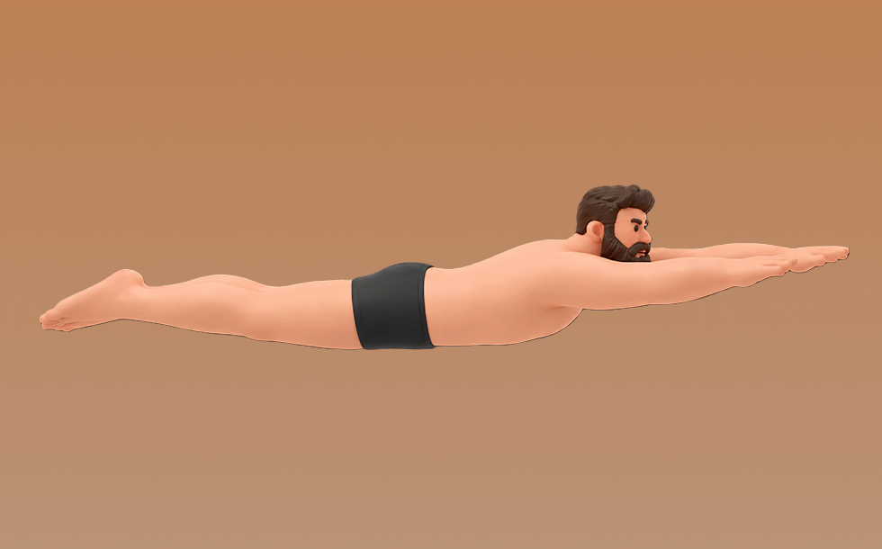

水泳

水泳とは、水中で全身を使って推進する有酸素トレーニングです。浮力により関節への衝撃を抑えやすいのが特徴で、フォームを保ちながら一定距離を反復して泳ぎます。これにより、心肺持久力の向上や全身持久力の強化が期待できます。
- 対象部位
- 有酸素
- 器具
- 水中
- 記録形式
- 距離
- 別名
- スイム / スイミング / swimming / swim / lap swim / pool swim
YouTube動画
-
【クロール】入門編【最初に見るべき】初心者向け【ポイント解説】
-
#3 クロールが速くなるための3つのポイントを水泳自由形元日本代表の松本弥生が徹底解説!
-
【クロールのコツ】進まないキックが激変！バタ足を楽に泳ぐ泳ぎ方へ
-
クロール１往復でも疲れるあなたへ！楽に長く泳ぐコツを習得して10往復を楽々泳ごう！
-
クロールのコツ～高安亮選手のお手本～【コナミメソッドまとめ】
-
初心者でも爆速になれる！力で進まないクロールの泳ぎ方を伝授!!
-
#12 【初心者卒業】見た目もスピードも変わる！クロール改善３つのコツをプロが教えます。
-
【水泳-平泳ぎ】初心者完全攻略！平泳ぎのコツ【3STEP編】
-
なぜプロは速い？進むクロールの秘密を知る簡単テクニック
-
クロールの教え方④～息継ぎの正しいタイミング～【コナミメソッドまとめ】
-
【水泳-クロール】意外と多い手の回し方！楽に泳げるようになるためのコツとは！？
-
【初心者もOK】クロールがスイスイ進む“疲れにくいフォーム”完全解説！
-
【9割が知らない】力任せのクロールは卒業。水の抵抗から解放される、新時代の”美・クロール”3つの法則
-
平泳ぎのコツ～高安亮選手のお手本～【コナミメソッドまとめ】
-
【シニアのためのクロール入門】プロがクロールが泳げるようになる順序をこっそり教えます
-
【超簡単】プロのクロールのフォームがゆったりしてるのに速く楽に泳げる理由がこれです
-
【9割の初心者が知らない】クロールで息が苦しい原因、実は"吸いすぎ"じゃなくて…？
YouTubeショート
-
【クロール速くなるコツ】25m自由形10秒98【水泳】
-
クロールの息継ぎのコツを１分45秒で解説｜改定版
-
なめらかなクロールのための重要ポイント
-
【クロール革命】疲れる・沈むバタ足は今日で卒業。9割が知らない「股関節を鞭のように使う」キックの極意#shorts
-
【クロール】１かきが変わる！絶対進む手のかき方にはコツがある！#shorts
-
【水泳-飛び込み】スタートの4段階練習法
-
平泳ぎストローク💙平泳ぎの掻き方、上体の位置などをチェックしてみて下さい！伸びのある泳ぎを目指しましょう！#平泳ぎ#水泳#スイミング#swimming
-
初心者必見！クロール泳ぎ方！#スイミング#クロール#泳ぎ方#解説#水泳
-
バタフライ🍊キャッチ動作・プッシュひとかきでより前に進めるよう、ポイントをチェックしていきましょう😉#水泳#バタフライ#スイミング#プール #swimming
-
秒速２mで泳ぐ25mクロール！【25mクロール12秒48】
-
バタフライ🟠リズム良く楽に泳ぐために意識していること😉良い例と悪い例を見比べていきましょう！#水泳#swimming #プール#スイミング
-
【バタフライ】進むキックのコツ。あれがとにかく痛い。#shorts
-
クイックターン、初心者とコーチの違い #スイミング #トレーニング #ターン
-
バタフライが上手くなりたいなら、この1つだけ練習してみてください。
-
中級｜平泳ぎ｜前編｜タイミングは◯→◯→◯｜練習風景 #swimming #水泳 #泳ぎ方 #平泳ぎ
-
クロールで呼吸がうまくできない方は、この1つだけ意識してみてください。
-
【9割が知らない】バタフライが楽になる"魔法の瞬間"とは？腕のタイミングをこれに変えるだけで驚くほど進む！ #水泳 #バタフライ#shorts
-
クロール🟠速くなる3つのポイント😉スピードアップ・パワー！速く泳ぐには、無駄を減らすことが大切！意識してみてください✨#水泳#スイマー#クロール#水泳#プール#マスターズ#swimming
-
【バタフライのコツ】息継ぎのたびに体が沈んでいませんか？「上げる」をやめるだけで、驚くほど楽に進みます。#shorts
-
平泳ぎのタイミングが合わないなら、これだけは覚えてください
-
【9割が知らない】クロールの息継ぎが苦しいのは”アレ”のせい！楽に25m泳げる『2段階呼吸法』がマジですごい#水泳#クロール #息継ぎ#泳ぎ方 #shorts
-
【9割が挫折】バタフライが疲れる本当の理由。力を入れるのは“この一瞬”だけで、イルカのように楽に進める。#shorts
-
3）クロールが速くなるための3つのポイントを元日本代表の松本弥生が徹底解説!
-
背泳ぎが上手くなりたければ これだけに集中
-
7）【脱クロール初心者】元日本代表が教えるストロークの極意と練習方法！！
-
【徹底比較！】レベル別クロールの泳ぎ方 ストローク編 #水泳 #日テレ #ドリームコーチング
-
平泳ぎの泳速度の違い！
-
海でのヘッドアップはコレで決まり❗️#水泳#swimming#openwaterswimming#トライアスロン#アスリート#shorts
-
ミウラスイミング 背泳ぎの泳ぎ方 良い例、悪い例① #swimming #pooltime #初心者水泳#背泳ぎ
-
【水泳】綺麗な飛び込みをするコツ#shorts
-
平泳ぎが上手な人と苦手な人の違い
-
【背泳ぎ】スタート練習【日本選手権（25m）】
-
【水泳】平泳ぎを楽に泳いだけど、これ違反？#shorts
動作方法
- ウォームアップで心拍を段階的に上げる
- 目的に合わせてペースを設定する
- 終了後はクールダウンで整える
動作ポイント
- 呼吸を止めない
- 開始直後に追い込みすぎない
ワンポイントアドバイス
- 体調に合わせて時間や強度を調整する
- ペースより継続を優先する
目的別回数設定
目的や体力に応じた一般的な目安です。無理のない範囲で調整してください。
- 筋力アップ
- 高強度 20〜60秒
- 筋肥大
- 中強度 10〜20分
- 持久力アップ
- 低〜中強度 20〜60分
YouTube動画について
動画はYouTubeの公開情報をもとに表示しています。内容は投稿者によるもので、Biggrによる監修ではありません。
アプリを入手
筋トレやトレーニングの記録はBiggrにお任せください。今すぐ無料で使い始められます。